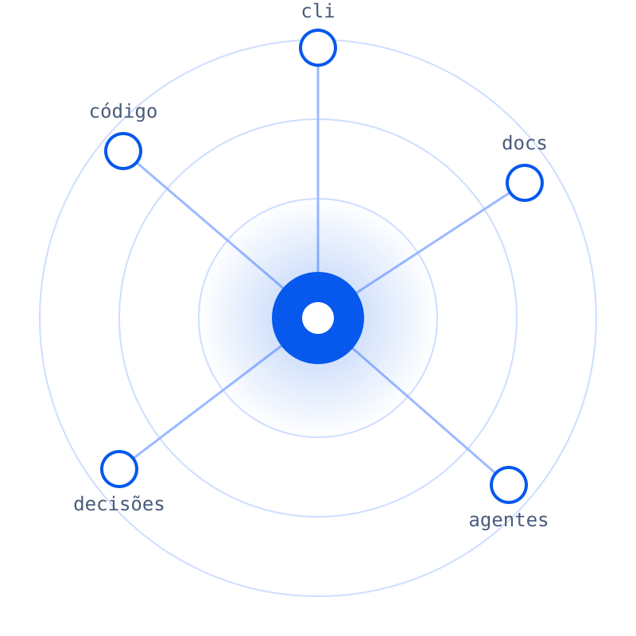

Vault System
Conhecimento
distribuído.
Código, documentos e decisões com origem, para pessoas, agentes e ferramentas.

Vault System
02 / 03Como funciona
Três etapas
01ReunirCódigo, documentos e decisões entram na órbita do projeto.
02ConectarAs relações entre as fontes dão contexto a cada informação.
03DistribuirPessoas, agentes e ferramentas reaproveitam esse contexto.
Vault SystemArraste
Na linha de comando
Uma pasta, um vault.
$ vs sync --dry-run
12 arquivos · 3 notas *
$ vs sync
✓ vault atualizado
Vault SystemDemonstração do fluxo proposto
Vault System
O contexto
certo, onde
você está.
Conhecimento distribuído.